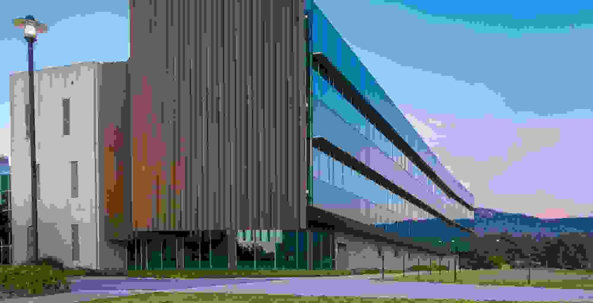

How to Use IoT Networks to Boost Operational Efficiency in Commercial Real Estate
Discover how IoT networks enhance operational efficiency in commercial real estate by optimizing energy use, asset management, and tenant experiences.
April 15, 2025 · 5 min read · By Bill Douglas & Drew Hall
TL;DR: IoT networks are operational tools, not novelties. CRE operators use them to cut costs, raise uptime, and standardize across the portfolio — but only if the networks are owner-controlled. Vendor-locked IoT becomes another silo that doesn't talk to the rest of the building.
In the rapidly evolving landscape of commercial real estate (CRE), integrating Internet of Things (IoT) networks has become a game-changer. By embedding smart devices and sensors throughout buildings, property managers and owners can harness real-time data to optimize operations, reduce costs, and enhance tenant satisfaction. This article delves into the essence of IoT networks in CRE, their key benefits, real-world applications, implementation strategies, and future trends.
What is an IoT Network in Commercial Real Estate?
An IoT network in CRE refers to a system of interconnected devices and sensors installed within a building to collect, transmit, and analyze data related to various building operations. These devices can monitor and control systems such as heating, ventilation, and air conditioning (HVAC), lighting, security, and occupancy. By leveraging IoT networks, buildings transform into smart entities capable of autonomous operation adjustments based on real-time data, leading to enhanced efficiency and performance.
Key Benefits of IoT Networks for Operational Efficiency
1. Energy Management and Sustainability
IoT-enabled energy management systems provide granular insights into energy consumption patterns, enabling property managers to identify inefficiencies and implement corrective measures. For instance, smart sensors can adjust lighting and HVAC systems based on occupancy, significantly reducing energy waste. According to Schneider Electric, integrating IoT solutions can help maximize profits and minimize risks by improving energy management and sustainability in real estate portfolios.
2. Predictive Maintenance
Traditional reactive maintenance approaches often lead to unexpected equipment failures and costly repairs. IoT networks facilitate predictive maintenance by continuously monitoring the condition of building systems and alerting managers to potential issues before they escalate. Deloitte highlights that predictive maintenance empowers companies to maximize the useful life of their assets while avoiding unplanned downtime and minimizing planned downtime across their operations.
3. Enhanced Security and Access Control
Integrating IoT technology into security systems allows for centralized monitoring and control of access points, surveillance cameras, and motion detectors. This connectivity ensures a swift response to security incidents and provides a comprehensive overview of building security. Mid-Atlantic Controls notes that IoT technology allows access control systems, security cameras, motion detectors, and door locks to connect on a single system rather than each requiring a separate, dedicated network.
4. Space Optimization and Occupant Comfort
IoT sensors can track space utilization and occupancy patterns, providing data that helps optimize office layouts and improve tenant experiences. Smart building technologies can adjust environmental conditions such as lighting and temperature to suit occupant preferences, enhancing comfort and productivity. JLL emphasizes that smart building solutions using IoT and AI can develop intelligent, data-driven buildings that optimize energy efficiency, predictive maintenance, and space utilization—reducing costs and enhancing sustainability.
Real-World Use Cases
Case Study 1: Energy Savings through Smart Lighting
A notable example involves a startup that implemented IoT-enabled lighting systems in commercial buildings. By installing sensors that detect occupancy and natural light levels, the system adjusts artificial lighting accordingly, resulting in significant energy savings. This approach not only reduces electricity bills but also extends the lifespan of lighting fixtures.
Case Study 2: Predictive Maintenance in HVAC Systems
Property managers have adopted IoT solutions to monitor HVAC system performance continuously. Sensors detect anomalies such as airflow reductions or temperature inconsistencies, enabling maintenance teams to address issues proactively before they lead to system failures. This strategy reduces downtime and maintenance costs while ensuring tenant comfort.
Case Study 3: Enhanced Security with Integrated Systems
Commercial properties have integrated IoT-based security systems that connect surveillance cameras, access controls, and motion detectors into a unified platform. This integration allows for real-time monitoring and swift responses to security breaches, thereby enhancing the safety of occupants and assets.
Implementation Tips for CRE Owners and Operators
1. Assess Current Infrastructure
Before deploying IoT solutions, evaluate the existing building infrastructure to determine compatibility with new technologies. Identify areas where IoT can have the most significant impact, such as energy management, security, or maintenance.
2. Choose Scalable Solutions
Select IoT systems that can scale with your building's needs and adapt to future technological advancements. Scalability ensures that your investment remains relevant and continues to deliver value over time.
3. Prioritize Data Security
With the increased connectivity of IoT devices, data security becomes paramount. Implement robust cybersecurity measures to protect sensitive information and maintain tenant trust.
4. Collaborate with Experienced Partners
Engage with technology providers and consultants who have a proven track record in implementing IoT solutions in CRE. Their expertise can guide you through the complexities of deployment and integration.
5. Train Staff and Tenants
Ensure that building staff and tenants are educated on the benefits and functionalities of the IoT systems. Proper training facilitates smoother adoption and maximizes the potential benefits of the technology.
Future Trends in IoT for Commercial Real Estate
Integration with Artificial Intelligence (AI)
The convergence of IoT and AI is set to revolutionize CRE operations. AI algorithms can analyze data collected from IoT devices to provide deeper insights, automate decision-making processes, and enhance predictive capabilities. According to Cohesion, these integrations can transform buildings into intelligent environments that continually improve over time.
Focus on Tenant Experience
Future IoT developments will increasingly prioritize tenant experience, offering personalized environments and services. From customizable lighting and temperature settings to smart access controls, IoT will play a crucial role in enhancing occupant satisfaction.
Emphasis on Sustainability
As environmental concerns continue to grow, IoT technologies will be instrumental in helping CRE stakeholders achieve sustainability goals. Real-time monitoring of energy consumption and emissions will facilitate more effective strategies for reducing the carbon footprint of buildings.
Conclusion
The integration of IoT networks in commercial real estate presents a transformative opportunity to enhance operational efficiency, reduce costs, and improve tenant satisfaction. By understanding the benefits, learning from real-world applications, and following strategic implementation practices, CRE owners and operators can position their properties at the forefront of innovation. Embracing IoT is not merely a trend but a strategic move towards a more sustainable and efficient future in commercial real estate.

Your Next Step
Complimentary CRE Data & Digital Review Session
One building. Map who owns what, where data lives, and where operational burden stacks up vs your KPIs.